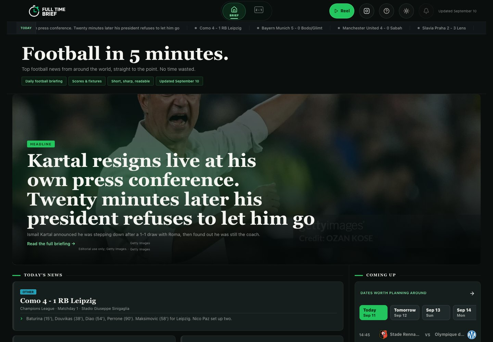

Full Time Brief
Co-founder & Engineer · 2026–Present

Overview
Full Time Brief is a live football briefing platform I co-founded to make it easier to keep up with the sport without following news and matches throughout the entire day. It brings together a concise daily briefing with fixtures, scores, tables, clips, and live match coverage across major competitions.
My role
I lead the technical side of the product end-to-end. I built and maintain the frontend, backend, databases, deployment, monitoring, and the automated systems that keep news and match information current. My co-founders focus primarily on editorial direction, product ideas, and social media.
Building it
Building Full Time Brief pushed me well beyond my original machine-learning background. I had to learn and work across frontend development, backend systems, databases, deployment, infrastructure, live data, and product design while continuously improving the site based on user feedback.
AI has been an important part of that process, both in helping automate repetitive parts of the product and in accelerating how I learn, build, test, and iterate across unfamiliar parts of the stack. The project has been one of the clearest examples for me of learning engineering by owning a real system end-to-end.